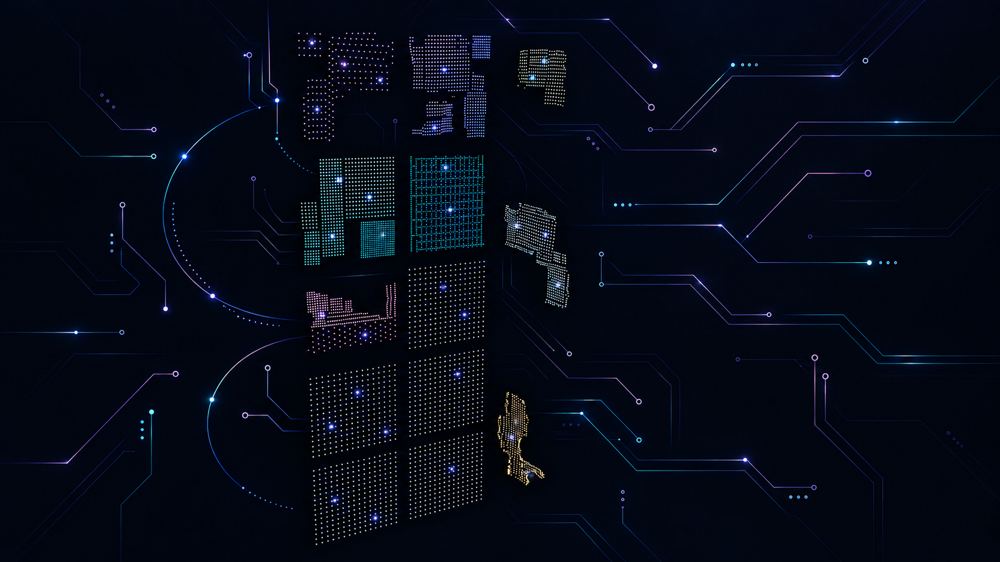

Bögen links · Leiterbahnen über die ganze Breite · einzelne LED-Glanzpunkte · lokale Vorschau.

Beispieloberfläche zur Beurteilung der Lesbarkeit
29 Universen · Teensy 4.1
Feste Octo-Belegung
Universe 142–145 · GRB
Universe 146–149 · GRB